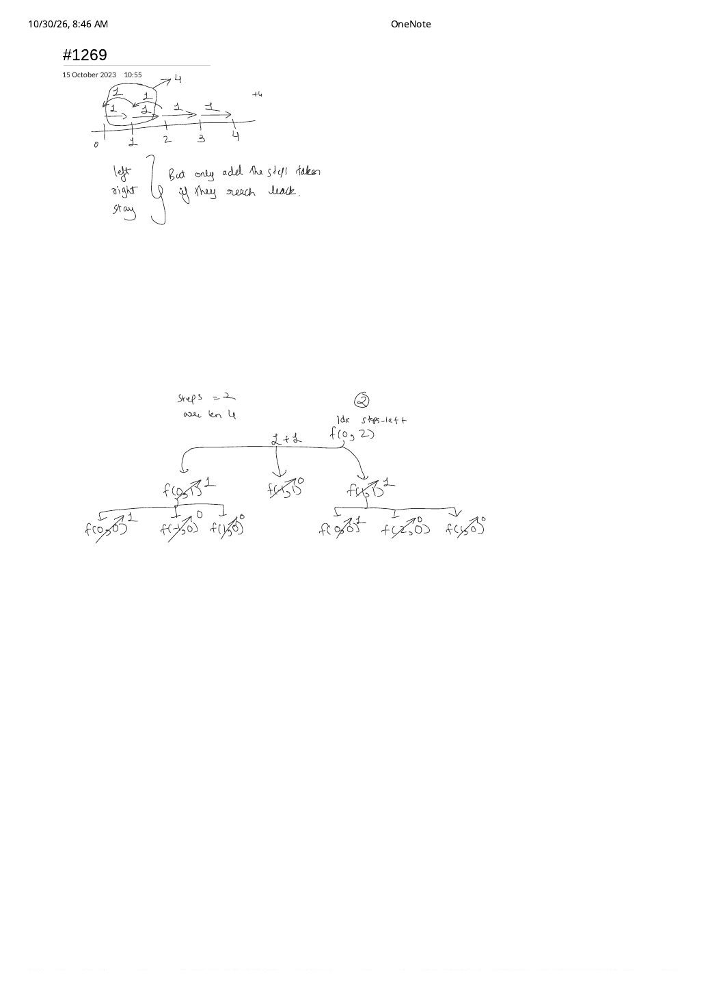

LC 1269: Number of Ways to Stay in the Same Place After Some Steps
Expanded from handwritten competitive coding study note: 09_1269.pdf
1. Problem Statement & Constraints
You have a pointer at index 0 in an array of size arrLen ($1 \le \text{arrLen} \le 10^6$). At each of steps ($1 \le \text{steps} \le 500$) moves, you can move 1 position Left (pos - 1), 1 position Right (pos + 1), or Stay in the same place (pos), without ever stepping outside $[0, \text{arrLen} - 1]$. Return the number of ways the pointer ends back at index 0 after all steps moves, modulo $10^9 + 7$.
2. Unpacking the Handwritten Recursion Tree & Reach-Back Insight (09_1269.pdf)
In 09_1269.pdf, we sketch the number line $0 \dots 4$ and write the key constraint right next to the three move types (left, right, stay): "But only add the steps taken if they reach back."
09_1269.pdf for steps = 2, arrLen = 4: Out-of-bounds f(-1, ·) = 0 is pruned immediately, and at steps_left == 0 only idx == 0 returns 1 (paths Stay → Stay and Right → Left).3. Brute $\to$ Naive $\mathcal{O}(S \cdot L)$ TLE $\to$ Horizon-Pruned $\mathcal{O}(S \cdot \min(L, S))$ DP
- Brute Force Recursion ($\mathcal{O}(3^{\text{steps}})$): Branches 3 ways per step ($3^{500}$ paths).
- Naive 2D Tabulation Trap ($\mathcal{O}(\text{steps} \times \text{arrLen})$ — TLE & MLE!): Look at the asymmetric constraints: $\text{steps} \le 500$, whereas $\text{arrLen} \le 10^6$! Allocating or iterating over $500 \times 10^6 = 5 \times 10^8$ states blows right past time and memory limits!
- Optimal Reach-Back Horizon Pruning: Why is
arrLen = 10^6completely irrelevant whensteps = 500?- To step right to index $p$ and step all the way back to index $0$, you need at least $p$ right moves $+$ $p$ left moves $= 2p$ total moves!
- Therefore, no valid return trajectory can ever visit an index $p \gt \lfloor \text{steps} / 2 \rfloor$!
- Clamping
maxPos = min(arrLen - 1, steps / 2)shrinks the maximum possible coordinate from $10^6$ down to at most $250$! Even tighter: on step $s \in [1, \text{steps}]$, only positions $p \le \min(\text{maxPos}, \text{steps} - s)$ can still make it home in the remaining $\text{steps} - s$ moves!
Pruned 1D Rolling Recurrence (Modulo $M = 10^9 + 7$)
With $\text{dp}^{(0)}[0] = 1$ (and $0$ elsewhere), for step $s = 1 \dots \text{steps}$ and $0 \le p \le \min(\text{maxPos},\, \text{steps} - s)$:
(Combinatorial bonus: when $\text{arrLen} \gt \lfloor \text{steps} / 2 \rfloor$, $\text{dp}^{(\text{steps})}[0]$ is the classic $s$-th Motzkin number $M_s$: $1, 1, 2, 4, 9, 21, 51, \dots$!)
4. Step-by-Step Dry Run on steps = 3, arrLen = 2
Tracing maxPos = min(2 - 1, 3 / 2) = min(1, 1) = 1
s = 0 (start): dp = [1, 0]s = 1: pos 0 = dp[0] + dp[1] = 1; pos 1 = dp[0] + dp[1] = 1 $\longrightarrow$ dp = [1, 1]s = 2: pos 0 = 1 + 1 = 2; pos 1 = 1 + 1 = 2 $\longrightarrow$ dp = [2, 2]s = 3 (limit = min(1, 3 - 3) = 0): pos 0 = dp[0] + dp[1] = 2 + 2 = 4 $\longrightarrow$ Return 4!(The 4 trajectories are:
S-S-S, R-L-S, R-S-L, and S-R-L; notice R-R-L is blocked by arrLen = 2!)
5. Clean C++ Implementation
// LC 1269: Number of Ways to Stay in the Same Place — O(S * min(L, S)) Time, O(min(L, S)) Space
#include <algorithm>
#include <vector>
using namespace std;
class Solution {
public:
int numWays(int steps, int arrLen) {
const long long MOD = 1'000'000'007LL;
int maxPos = min(arrLen - 1, steps / 2); // Cannot wander past steps/2 and return to 0!
vector<long long> dp(maxPos + 1, 0), nextDp(maxPos + 1, 0);
dp[0] = 1;
for (int s = 1; s <= steps; ++s) {
int limit = min(maxPos, steps - s); // Must be within (steps - s) of index 0!
fill(nextDp.begin(), nextDp.end(), 0);
for (int pos = 0; pos <= limit; ++pos) {
long long ways = dp[pos]; // Stay
if (pos > 0) ways += dp[pos - 1]; // Step Right from pos - 1
if (pos < maxPos) ways += dp[pos + 1]; // Step Left from pos + 1
nextDp[pos] = ways % MOD;
}
swap(dp, nextDp);
}
return (int)dp[0];
}
};6. Complexity Proof & Key Edge Cases
- Time Complexity — $\mathcal{O}\bigl(\text{steps} \cdot \min(\text{arrLen}, \text{steps})\bigr)$: At most $500 \times 251 \approx 6.25 \times 10^4$ triangle-pruned cell updates—running in $< 1\text{ ms}$!
- Space Complexity — $\mathcal{O}\bigl(\min(\text{arrLen}, \text{steps})\bigr)$: Two vectors of length at most $251$.
- Key Edge Cases:
arrLen = 1:maxPos = 0; bothpos > 0andpos < maxPosarefalse, leaving onlyStayat every step $\implies \mathbf{1}$.- Resetting
nextDpfully when shrinkinglimit: Notice we zero out all ofnextDp(or avoid readingdp[pos + 1]beyond the previous step's horizon) so stale values from earlier wider horizons never leak back intodp[limit]! - 3-Term Sum Overflow Guard: Adding three integers each $< 10^9 + 7$ can reach $\approx 3 \times 10^9 \gt 2^{31} - 1$; summing in
long longbefore% MODprevents 32-bit signed overflow in C++.
From the Handwritten Notes
View original handwritten page — 09_1269.pdf (Left/Right/Stay return note & f(0, 2) recursion tree)


09_1269.pdf: Number-line moves ("only add the steps taken if they reach back") and complete 3-way recursion tree for steps = 2, arrLen = 4 summing to 2.